Daniel Imsula
Supervisor Inventory • Inventory Controller • Inventory Specialist
Profesional Inventory & Warehouse Operations Leader dengan rekam jejak lebih dari 10 tahun di Sektor Manufaktur & E-Commerce Omnichannel (Somethinc - Beautyhaul, Hanasui, PT Aditya Manufaktur Indonesia, & PT Kirin Dinamika Sentosa). Memiliki keahlian teruji dalam pencapaian Stock Accuracy 99,98%, supervisi tim gudang pabrik & fulfillment center, audit Stock Opname massal, sistem antrian kurir instan, serta implementasi otomasi AI modern.
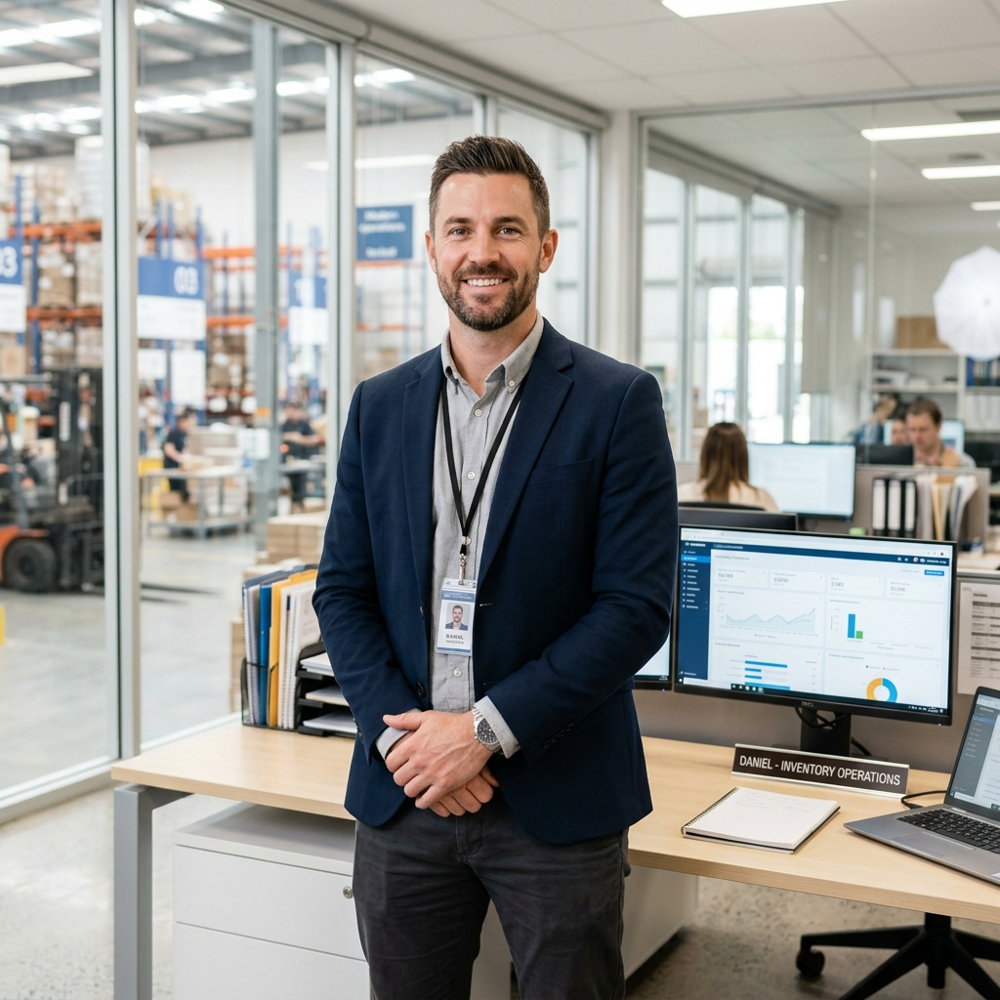
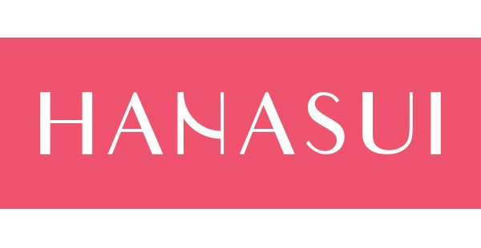
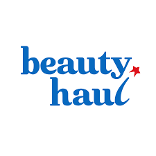
Keahlian Lintas Sektor: Manufaktur & E-Commerce
Kombinasi kepemimpinan operasional pabrik, audit fisik terstruktur, kepatuhan SOP pergudangan, analisis data selisih, adopsi AI terdepan, dan integrasi sistem WMS untuk menjamin kelancaran rantai pasok.
Akurasi Stok Maksimal (99,98%)
Menerapkan metodologi Cycle Count harian/mingguan dengan segmentasi ABC Analysis, rekonsiliasi data fisik vs WMS, serta audit berkala untuk menjamin integritas data stok secara menyeluruh.
Automasi Inbound, Marketplace & Shipper
Memberikan continuous improvement alur proses di divisi Inbound receiving, Marketplace Fulfillment (Shopee, Tokped, TikTok Shop), dan integrasi Shipper kurir logistik untuk meniadakan bottleneck operasional.
Report Real-Time & Analisis AI
Membangun sistem pelaporan live dashboard untuk memonitor backlog pesanan, status mutasi stok, SLA dispatch kurir secara instan, serta Root Cause Analysis (RCA) selisih stok berbantuan AI.
Keahlian Teknis, Sistem & Ekosistem AI
Kombinasi keahlian manajemen inventaris di pabrik manufaktur dan hub e-commerce, sistem aplikasi pergudangan, serta adopsi *Artificial Intelligence* (AI).
Manajemen & Audit Inventaris
Sistem & Aplikasi Pergudangan
Penerapan AI & Modern Tools
Operasional & Kepemimpinan
Produksi Musik & Audio Engineering (DAW)
Sistem Dikembangkan Sendiri & Solusi Lapangan
Seluruh sistem operasional berikut dirancang dengan Arsitektur Dual-Panel (Panel Admin Desktop untuk kontrol & reporting serta Panel PIC/Operator Mobile/Handheld PDA untuk eksekusi lapangan) yang dikembangkan sendiri oleh Daniel Imsula untuk memecahkan hambatan operasional nyata secara terintegrasi.
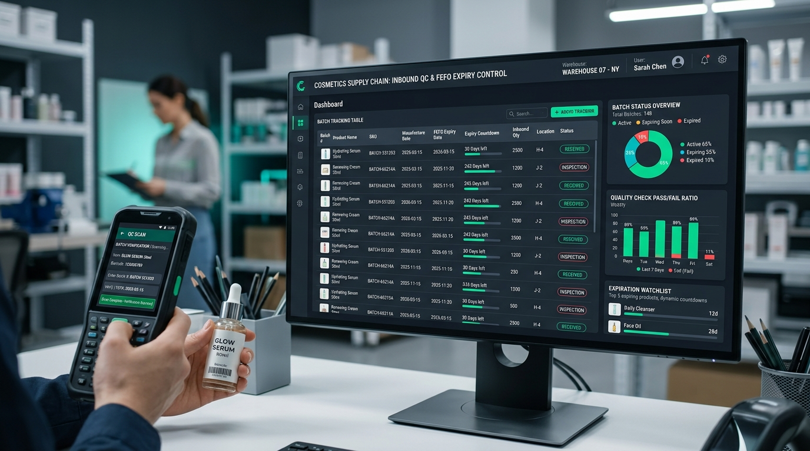
Developed by Daniel • Inbound QC & FEFOIMS (Inventory Management System) Inbound QC, Batch & FEFO Control
Sistem manajemen mutu penerimaan barang masuk (Inbound QC), validasi nomor batch produksi, dan kontrol otomatis alur FEFO (First Expired, First Out) produk kosmetik & skincare. Menjamin setiap batch yang masuk terverifikasi masa kadaluwarsanya dan teralokasi ke bin rak yang tepat secara otomatis.
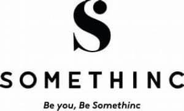
Somethinc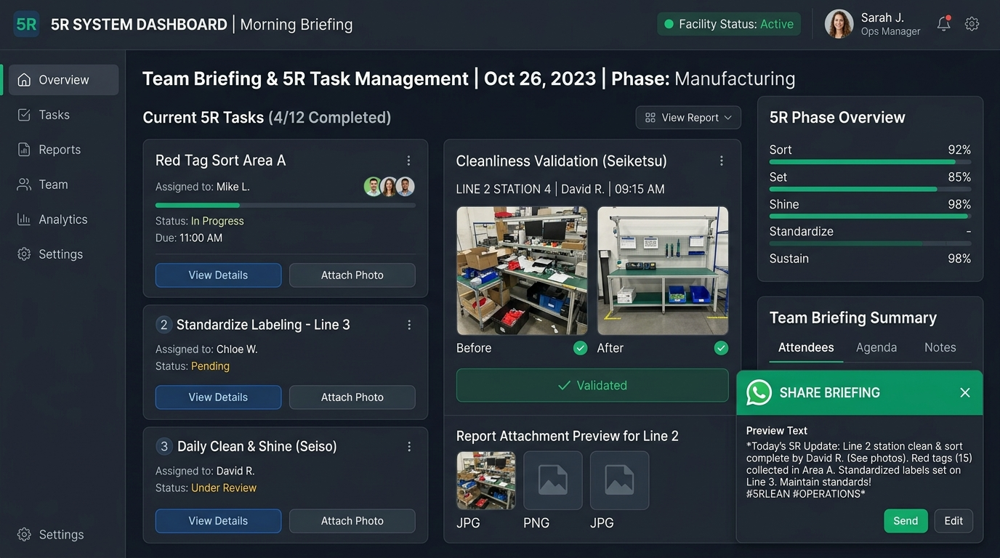
Developed by Daniel • Sistem 5R & BriefingSistem Assign Task 5R & Briefing Tim Per Divisi (Auto Share WA)
Aplikasi delegasi tugas 5R (Ringkas, Rapi, Resik, Rawat, Rajin) dan koordinasi briefing harian tim per divisi gudang. Dilengkapi modul unggah foto bukti kerja dan auto-generate format laporan otomatis yang langsung dibagikan ke WhatsApp grup dengan rapi.
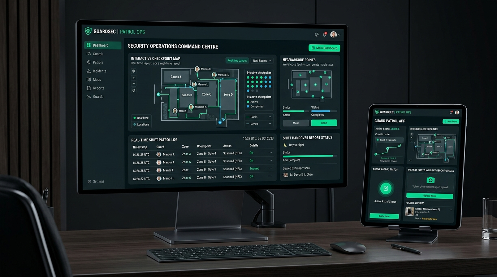
Developed by Daniel • Security PatrolSecurity Patrol Management System & Live Shift Report
Sistem digital patroli keamanan fasilitas gudang & pabrik. Memandu petugas security melakukan kontrol titik pos keliling (checkpoint barcode/NFC), pencatatan insiden mobile, dan pelaporan status patroli shift secara live.
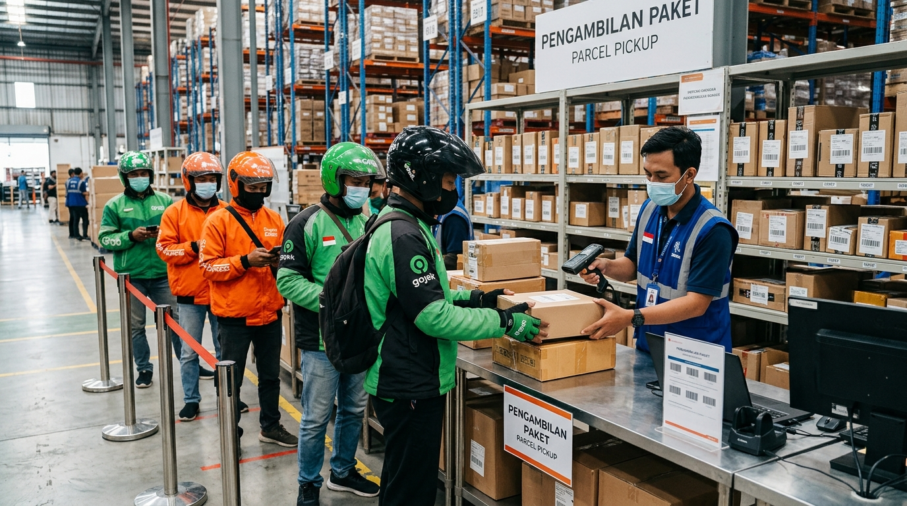
Developed by Daniel • Antrian KurirSistem Antrian Serah Terima Kurir Instan (Gojek, Shopee Express, Grab)
Sistem antrian digital serah-terima paket kurir instan dan sameday (Gojek, GoSend, Shopee Express / SPX, Grab), mengeliminasi kerumunan driver di area staging dan mempercepat waktu serah terima hingga 70%.
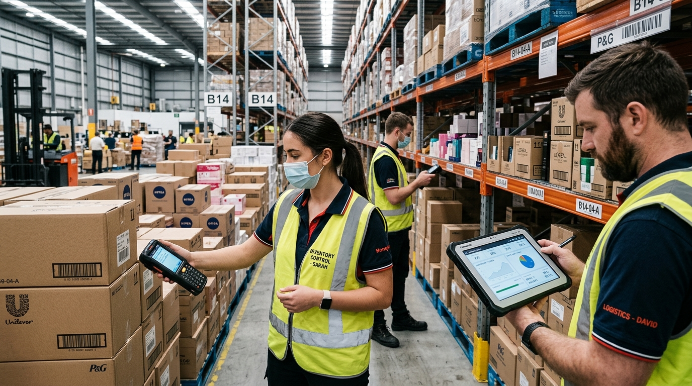
Developed by Daniel • Engine Stock OpnameSystem-Driven Stock Opname & Automated Reconciliation Engine
Sistem terotomasi untuk pelaksanaan Wall-to-Wall Stock Opname dan Cycle Count berkala. Memproses validasi hitung fisik vs saldo sistem WMS secara instan tanpa perlu olah manual di spreadsheet.
 Developed by Daniel • Handheld IMS
Developed by Daniel • Handheld IMS
Optimasi Picking Logic & Integrasi Handheld Scanner IMS
Pengembangan alur pemindaian Handheld Scanner (PDA/Barcode) dan perombakan Picking Logic untuk memangkas waktu ambil barang dan menaikkan akurasi stok secara drastis dari 75% ke 99.99%+.
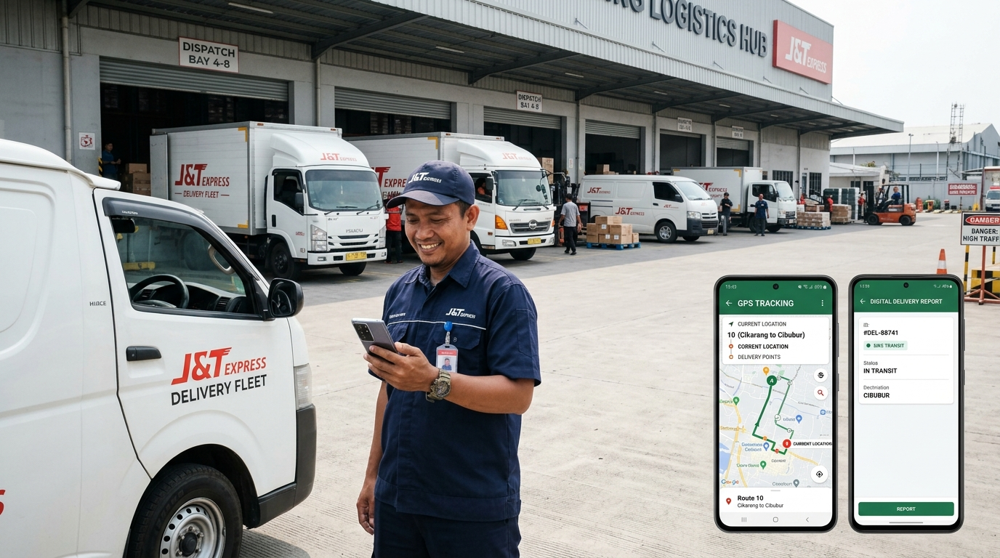
Developed by Daniel • TMS TrackingTransportation Management System (TMS) & Driver Live Tracking
Sistem penjadwalan armada pengiriman barang, koordinasi rute driver, live tracking posisi armada di peta digital, dan pelaporan bukti kirim digital secara mobile.
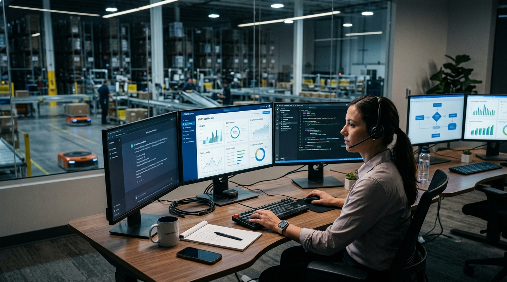
Integrasi AI • Discrepancy & SOPPenerapan AI untuk Analisis Discrepancy & Otomasi SOP Gudang
Implementasi ekosistem AI, BI & no-code modern (ChatGPT, Gemini, Claude, Antigravity IDE, Google Stitch, OpenClaw, Google Apps Script, AppSheet, & Looker Studio) untuk analisis anomali selisih stok, pembuatan SOP operasional otomatis, dan otomasi visual workflow data gudang.
 Studi Kasus • Somethinc Beautyhaul
Studi Kasus • Somethinc Beautyhaul
Setup WMS & Transformasi Akurasi Stok 99.85% di Somethinc
Kolaborasi aktif bersama Tim Tech dalam perancangan & setup sistem WMS baru, restrukturisasi Cycle Count rutin, dan pengendalian ketat FEFO produk kosmetik.
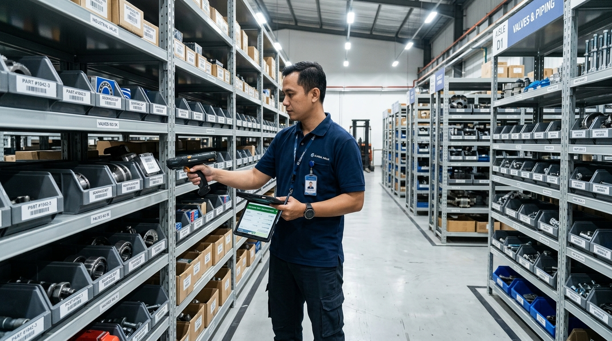
Studi Kasus • PT Aditya ManufakturAdministrasi Spare Part, Transfer Stock Produksi & Stock Opname
Pengelolaan administrasi spare part mesin manufaktur, eksekusi receipt barang masuk, transfer stock sesuai rencana produksi, monitoring buffer stock, hingga dipromosikan ke Supervisor Warehouse.
 Studi Kasus • PT Kirin Dinamika Sentosa
Studi Kasus • PT Kirin Dinamika Sentosa
Inbound, Transaksi Produksi Assy & Wall-to-Wall Stock Opname
Pengelolaan administrasi Inbound receiving material, pencatatan transaksi mutasi material untuk perakitan produksi (Assy), pengendalian stok harian, dan eksekusi Wall-to-Wall Stock Opname.
Perjalanan Karir Profesional
Rekam jejak kepemimpinan inventaris dan operasional pergudangan di industri e-commerce dan pabrik manufaktur.
Inventory Controller
PT Inovasi Eka Gemilang (Brand Hanasui)
Baru memulai karir sebagai Inventory Controller dan saat ini sedang aktif memimpin inisiatif continuous improvement di seluruh area inventory dan pergudangan brand Hanasui:
- Continuous Improvement di Area Inventory: Mengidentifikasi celah operasional dan merestrukturisasi alur inventory guna meningkatkan akurasi stok fisik vs sistem WMS, penegakan kontrol FEFO/FIFO produk kecantikan, dan mitigasi selisih barang.
- Flow Process Automation Lintas Divisi: Mengakselerasi efisiensi alur proses automasi di divisi Inbound (receiving & putaway), Fulfillment Marketplace (Shopee, Tokopedia, TikTok Shop, Lazada), dan Shipper (integrasi kurir & dispatch).
- Penyusunan Report Real-Time: Membangun sistem pelaporan dan live monitoring dashboard untuk melacak mutasi stok, backlog pemenuhan order e-commerce, dan status pengiriman secara instan.
Inventory Controller - Associate
Somethinc - Beautyhaul (PT Beauty Haul Indonesia)
Penghargaan atas dedikasi luar biasa dan performa administrasi & pengendalian stok terbaik di Somethinc - Beautyhaul.
Memegang peranan kunci dalam integrasi sistem dan pengendalian akurasi total inventaris puluhan ribu SKU kosmetik di gudang pusat omnichannel:
- Kolaborasi Tim Tech & Setup WMS: Berkolaborasi intensif bersama Tim Tech/Engineering dalam perancangan alur proses pergudangan, konfigurasi modul, User Acceptance Testing (UAT), hingga sukses go-live implementasi sistem Warehouse Management System (WMS) baru.
- Automasi Inbound, Marketplace & Shipper: Mengoptimalkan kecepatan alur picking-packing marketplace saat peak campaign dan koordinasi serah terima dengan pihak Shipper / ekspedisi.
- Stock Accuracy & Cycle Count (99,98%): Memimpin pelaksanaan Cycle Count rutin harian/mingguan, rekonsiliasi otomatis data WMS vs stok fisik, penyusunan report live, dan investigasi selisih barang (Root Cause Analysis 5-Why).
- FEFO/FIFO & Batch Expiry Control: Menegakkan pengawasan ketat rotasi barang kosmetik sesuai tanggal kedaluwarsa guna menjamin nol kerugian akibat expired stock.
Administrator Spare Part ➔ Promosi ke Supervisor Warehouse
PT Aditya Manufaktur Indonesia
• Administrator Spare Part: Januari 2015 – April 2021
• Promoted to Supervisor Warehouse:
Februari – Mei 2021
Memegang kendali penuh atas administrasi suku cadang mesin, material manufaktur, dan alur suplai operasional pabrik:
- Receipt & Inbound Spare Part: Menangani penerimaan (receipt) seluruh suku cadang mesin, komponen elektrik/mekanik, dan material pabrik serta verifikasi kesesuaian dokumen PO/faktur dengan fisik barang.
- Control Stock Spare Part: Melakukan pengawasan ketat saldo stok spare part, memonitor buffer stock komponen kritis guna mencegah downtime mesin produksi, dan investigasi selisih barang.
- Transfer Stock Rencana Produksi: Mengatur dan mengeksekusi mutasi transfer stok material dan spare part sesuai jadwal rencana produksi pabrik secara tepat waktu.
- Stock Opname Berkala: Memimpin pelaksanaan Stock Opname berkala untuk seluruh inventory suku cadang dan material pabrik hingga rekonsiliasi tuntas.
Administrator Warehouse
PT Kirin Dinamika Sentosa
Bertanggung jawab penuh atas administrasi dan pengendalian operasional stok pergudangan manufaktur:
- Inbound & Receiving: Menangani penerimaan barang masuk/material, pemeriksaan fisik kuantitas/kualitas, dan verifikasi dokumen surat jalan & packing list ke dalam sistem.
- Transaksi Produksi untuk Assy (Assembly): Mengontrol pengeluaran komponen/material dan mencatat transaksi mutasi barang untuk kebutuhan jalur perakitan (assembly line) produksi secara tepat waktu.
- Control Stock & Discrepancy: Melakukan monitoring saldo stok harian, menjaga ketersediaan buffer stock produksi, dan menginvestigasi potensi selisih stok (shrinkage).
- Stock Opname: Memimpin eksekusi Wall-to-Wall Stock Opname dan Cycle Count berkala puluhan ribu SKU komponen manufaktur hingga tuntas tanpa selisih signifikan.
Freelance Music Producer & Audio Engineer
Independent Music Studio & Audio Production
Spesialis produksi audio profesional lintas platform, perancangan komposisi musik, rekaman instrumen/vokal, mixing & mastering bertaraf industri, serta pembuatan latar musik sinematik (film scoring):
- Produksi Musik & Aransemen: Menggubah aransemen musik, komposisi melodi/harmoni, beat making, dan struktur lagu lintas genre komersial maupun independen.
- Audio Recording & Tracking: Menangani sesi rekaman vokal dan instrumen dengan gain staging presisi, manajemen sinyal audio, dan penataan akustik optimal.
- Audio Mixing: Melakukan penyeimbangan level (gain balance), stereo imaging & spatial panning, Dynamic EQ, Multiband Compression, Sidechaining, serta modulasi reverb/delay untuk clarity dan punch audio maksimal.
- Audio Mastering: Pemrosesan final mastering chain (Limiter, Dynamic Loudness Control) guna mencapai standar volume industri (LUFS) untuk distribusi platform streaming (Spotify, Apple Music, YouTube) dan media penyiaran.
- Film Scoring & Sound Design: Merancang musik latar sinematik (*original score/soundtrack*), atmosfer audio, dan efek suara (*sound design/foley*) untuk video komersial, film pendek, dan konten visual digital.
Mari Terhubung & Berkolaborasi
Terbuka untuk peluang posisi Supervisor Inventory, Inventory Controller, dan Inventory Specialist di sektor Manufaktur, E-Commerce, FMCG, maupun Retail.
Peluang Karir & Kontak Langsung
Saya siap berkontribusi memimpin operasional inventaris, menekan selisih stok, dan meningkatkan efisiensi alur pergudangan di perusahaan Anda.